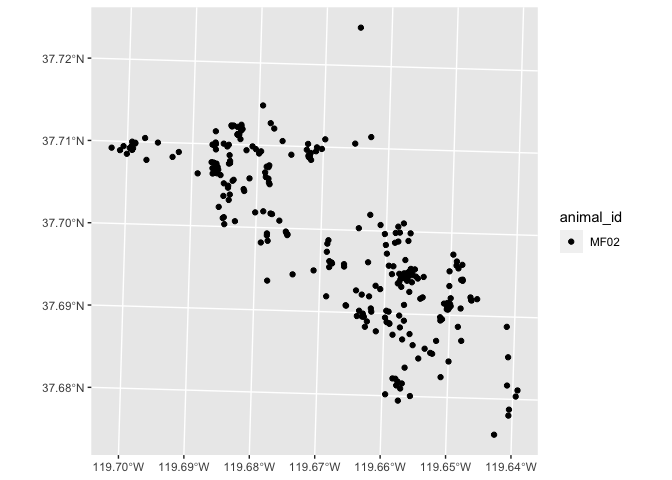

Better Environment/Animal Sensor Telemetry Repository
“Better” as in “better than nothing”. There are many other solutions that are more developed than this, most notably Movebank. Also I’m just really bad at naming things.
The goal of beastr is to provide a framework for storing, accessing, and processing wildlife telemetry data.
Installation
You can install the package using the devtools package
devtools::install_github('rgzn/beastr')Example
Build your database:
library(beastr, quietly = TRUE)
library(sf, quietly = TRUE)
# Use example source data
fix_file = system.file("lotek/PinPoint33452.txt", package = "beastr")
device_file = system.file("devices/collars.csv", package = "beastr")
animal_file = system.file("animals/critters.csv", package = "beastr")
deploy_file = system.file("deployments/deployments.csv", package = "beastr")
myDB = paste0(tempdir(check = TRUE), "/", "example.gpkg")
# Build a database
build_database(fix_files = fix_file,
device_files = device_file,
animal_files = animal_file,
deployment_files = deploy_file,
dsn = myDB,
tz = "US/Pacific")
# What layers are in there?
sf::st_layers(myDB)
#> Driver: GPKG
#> Available layers:
#> layer_name geometry_type features fields crs_name
#> 1 fixes Point 468 14 WGS 84 / UTM zone 11N
#> 2 animal_fixes Point 462 12 WGS 84 / UTM zone 11N
#> 3 devices NA 33 7 <NA>
#> 4 animals NA 4 5 <NA>
#> 5 deployments NA 20 6 <NA>View data linked to animals, rather than sensors:
library(dplyr, quietly = TRUE)
#>
#> Attaching package: 'dplyr'
#> The following objects are masked from 'package:stats':
#>
#> filter, lag
#> The following objects are masked from 'package:base':
#>
#> intersect, setdiff, setequal, union
library(ggplot2, quietly = TRUE)
points = sf::st_read(myDB, layer = "animal_fixes")
#> Reading layer `animal_fixes' from data source
#> `C:\Users\jweissman\AppData\Local\Temp\1\RtmpklJetu\example.gpkg'
#> using driver `GPKG'
#> Simple feature collection with 462 features and 12 fields (with 160 geometries empty)
#> Geometry type: POINT
#> Dimension: XY
#> Bounding box: xmin: 261780.2 ymin: 4173114 xmax: 267257.4 ymax: 4178607
#> Projected CRS: WGS 84 / UTM zone 11N
points %>%
ggplot2::ggplot() +
ggplot2::geom_sf(ggplot2::aes(fill = animal_id))
Related Projects
- ctmmweb [https://github.com/ctmm-initiative/ctmmweb]
- collardb [https://github.com/kissmygritts/collardb]
- amt [https://github.com/jmsigner/amt]
- movebank [https://www.movebank.org/]